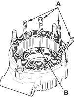

Stator Test
- Check that there is continuity between each pair of leads (A).
- If there is continuity, go to step 21.
- If there is no continuity, replace the alternator.

- Check for no continuity between each lead and the coil core (B).
- If there is no continuity, go to step 22.
- If there is continuity, replace the alternator.
- Assemble the alternator in reverse order of disassembly, and note these items:
- Be careful not to get any grease or oil on the slip rings.
- If you removed the pulley, tighten its locknut to 111 Nm (11.3 kgf/m, 81.7 lbf/ft) when you install it.